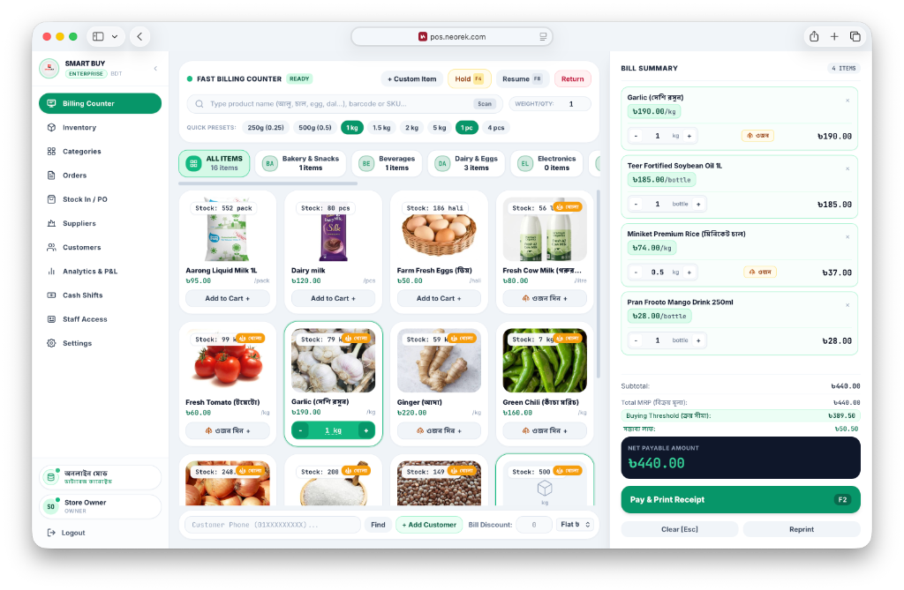
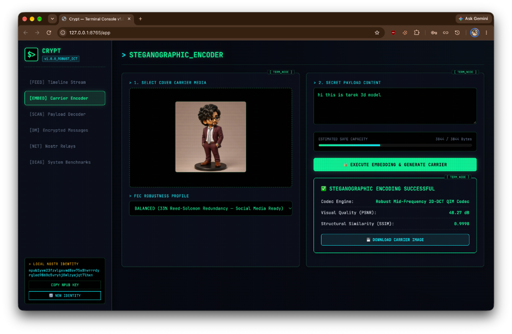
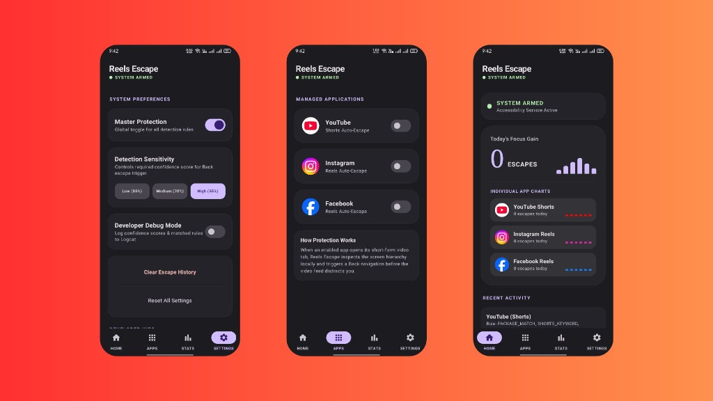
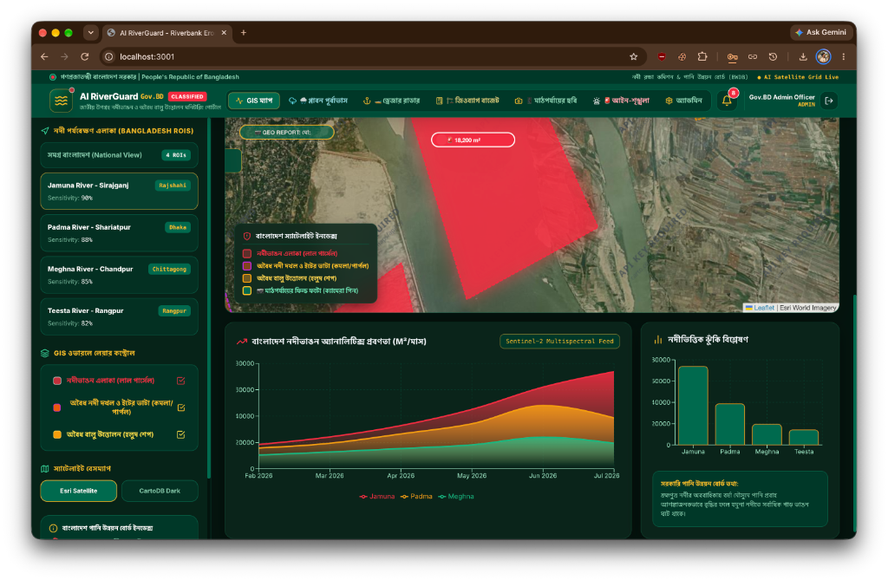

Tarek Parvez — Software & DevOps Engineer
Building dependable, scalable, and automated systems across backend, mobile, and cloud infrastructure.
M Tarek Rahman (Tarek Parvez)
Software & DevOps Engineer
Bridging software craftsmanship with infrastructure automation.
I am a software engineer with deep practical experience across full-stack web development, enterprise Java backend engineering, native Android and Flutter mobile development, and DevOps automation.
My approach extends beyond simply writing features: I care about how software is structured, tested, containerized, deployed, and monitored in production. From Java Spring Boot backends and PostgreSQL/MySQL databases to Dockerized CI/CD workflows and Kotlin Jetpack Compose apps — holistically from architecture to runtime.
What I Build
Architectural domains and software solutions I design and maintain.
Automated CI/CD & Deployments
Multi-stage container builds using Docker, automated GitHub Actions pipelines, Linux server administration, and reproducible environments.
Backend Services & REST APIs
High-throughput, role-authenticated REST services built with Spring Boot, Node.js, Express, and transactional database layers.
Native & Cross-Platform Mobile
Native Android apps with Jetpack Compose & Kotlin, and Flutter cross-platform applications featuring offline persistence and real-time push telemetry.
Database Engineering
Normalized relational schemas in PostgreSQL & MySQL and high-throughput document collections in MongoDB with optimized indexing and connection pooling.
Full-Stack Web Engineering
Responsive, accessible web applications in React.js with modular component architecture, optimistic state updates, and efficient client-server data syncing.
System Design & Clean Code
Object-Oriented Principles, Clean Architecture, repository patterns, comprehensive debugging, and maintainable software engineering practices.
Core Operating Principles
The standards that guide my software design and infrastructure decisions.
Clean Architecture First
Separate concerns cleanly between presentation, business rules, and persistence layers so code is testable and refactor-friendly.
Never Repeat Manual Steps
If a build, test, or deployment has to be run more than twice, write a script or GitHub Actions workflow to automate it.
Verification Over Assumptions
Write unit tests and validate edge cases to catch regressions before they reach staging or production environments.
Containerized Consistency
Package code with all dependencies in minimal Docker images to ensure identical execution between local and production environments.
Continuous Observability
Incorporate structured health endpoints, sensible logging, and status metrics to make systems transparent and debuggable.
Iterative Refinement
Profile slow queries, reduce memory footprint, eliminate technical debt, and continuously refine performance over time.
Education & Credentials
Daffodil International University
Currently pursuing Bachelor of Science in Computer Science & Engineering. Solid coursework in Data Structures & Algorithms, OOP (Java/C++), Database Management Systems, Operating Systems (Linux internals), and Software Engineering methodologies.
Co-Founded Ventures
Technology companies and digital solutions co-founded and actively engineered.
NEOREK
Co-founded NEOREK and serving as the Lead Developer. Driving technical architecture, cross-platform software engineering, and the execution of digital products and web solutions.
Licenses & Certifications
Professional certifications, technical coursework, and industry-recognized achievements.
Create High-Fidelity Designs and Prototypes in Figma
Authorized by Google and offered through Coursera. Verifies professional competency in building interactive high-fidelity prototypes, comprehensive design systems, component hierarchies, visual design principles, usability testing, and developer handoffs using Figma.
Flutter and Dart: Developing iOS, Android, and Mobile Apps
Authorized by IBM and offered through Coursera. Verified mastery of cross-platform mobile application engineering using Flutter and Dart, covering UI composition, reactive state management, asynchronous data fetching, and native platform integration for both iOS and Android.
Python Certification
Officially issued by Kaggle. Validates foundational and applied Python engineering competencies including core data structures (lists, dicts, sets), algorithmic logic, functional programming, working with external libraries, and data manipulation techniques.
Selected Engineering Projects
Real-world applications spanning Android engineering, Spring Boot backends, and full-stack platforms.

NEOREK POS Solutions
High-speed cloud & retail Point-of-Sale platform engineered with sub-second barcode/SKU scanning, live weight-scale metric computation, inventory/PO tracking, offline database sync, and virtual thermal printing.

Cryptimg: Steganographic Nostr Engine
Production-grade steganographic engine embedding cryptographically signed Nostr events into images using 2D-DCT frequency modulation and Reed-Solomon FEC to survive lossy social media pipelines.

Reels Escape: Focus & Wellbeing
Privacy-first Android utility engineered to break addictive doom-scrolling by detecting and auto-neutralizing short-form video traps (Reels, Shorts) with zero-network on-device telemetry.

AI RiverGuard: Satellite & ML System
Enterprise GovTech GIS and satellite remote sensing platform combining Sentinel-1/2 imagery, deep learning water segmentation, and PostGIS spatial indexing for real-time riverbank erosion and sand mining detection.
Looking for a reliable Software & DevOps Engineer?
Whether you need clean backend architecture, automated CI/CD pipelines, or robust application development, I'm ready to build together.